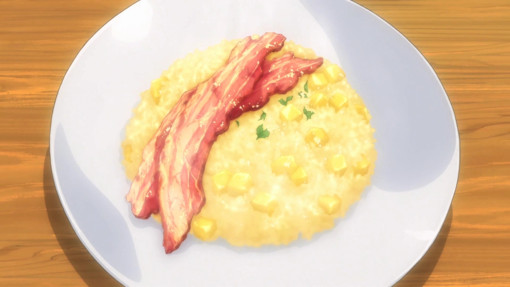

Apple Risotto

Description
A dish improvised by Soma to rejuvenate the eater.
Ingredients
Serves 2 plates
- 1/2 Apples
- 1 Teaspoon of Lemon Juice
- 1/4 of Onion (Sauteed)
- 2 Tablespoons of Butter
- 1/2 Cup of Rice
- 2 Tablespoons of White Wine
- 1 Cup of Apple Juice
- 1 Cup of Water
- 1 Teaspoon of Granulated Consommé
- Salt and Pepper
- 4 Slices of Thick-Cut Bacon
Optional Ingredients:
Steps
- Cook the bacon in a frying pan until it's crispy and set to the side.
- Peel the apple and dice it in cubes of 1cm*.
- Mince the onion.
- Heat the butter in a frying pan and sauté the onions.
- Add the rice to (4) and cook until it's transparent.
- Add the white wine to (5) and cook it until the alcohol burns off.
- Mix the apple juice, water and consommé. Slowly add this
1/8 cup at a time to (6) simmering on low heat for 15 minutes
(until all the liquid is absorbed).
- Add the apple dices and lemon juice to (7) and season it to taste with salt and pepper.
- Place (8) on a plate and top it with (1).
- You can use black pepper or powdered cheese as topping.